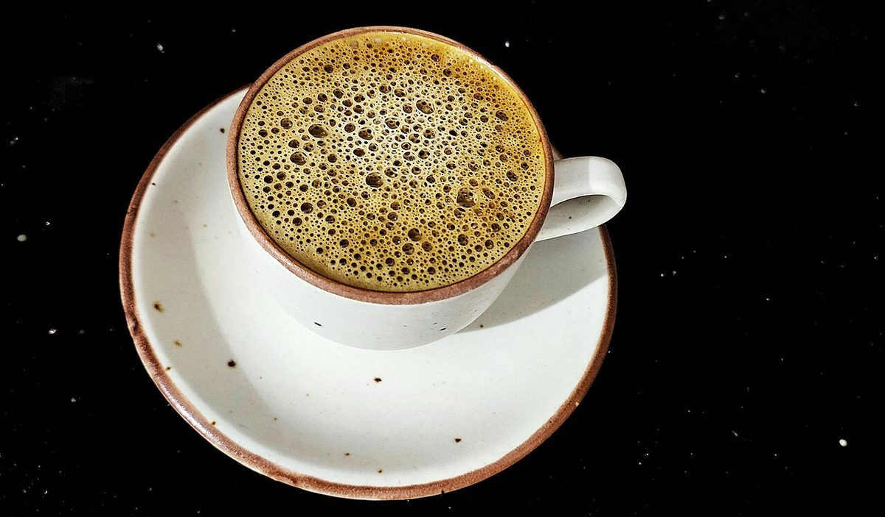
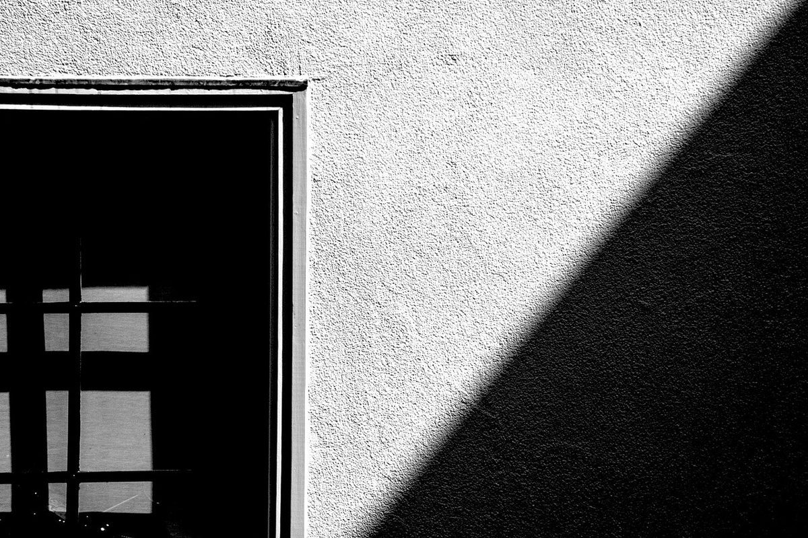
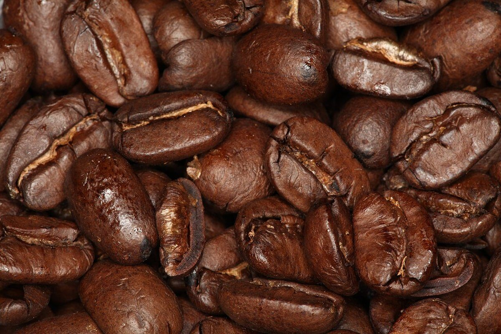
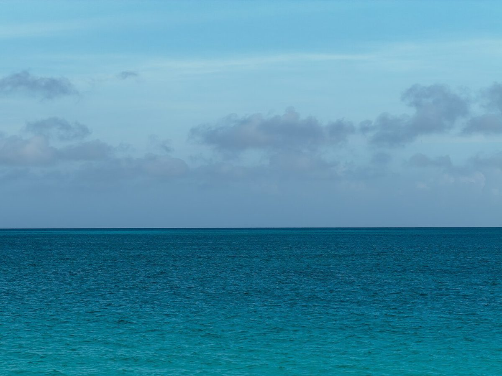

店のこと
店のこと
お店について確認できているのは、所在地・電話番号・Instagramのアカウントです。
確認できていること
- 店名は「nowa cafe」、業種はカフェ
- 所在地は大阪府高槻市芥川町３丁目４−１(〒569-1123)
- 電話番号は070-6507-3863
- Instagramは @nowacafe_
- 営業時間・定休日・メニュー・価格・ご予約・駐車場は準備中
下の「見立て」は制作側が遊びで考えたもので、お店の様子・考え・メニューとは関係がありません。
見立て帖
nowaを、文字の形で。
写真は国外または撮影地不明のフリー素材です。形が似ているものを選んだだけで、お店の品ではありません。
山のアーチ


輪

ふたつの谷



輪と持ち手